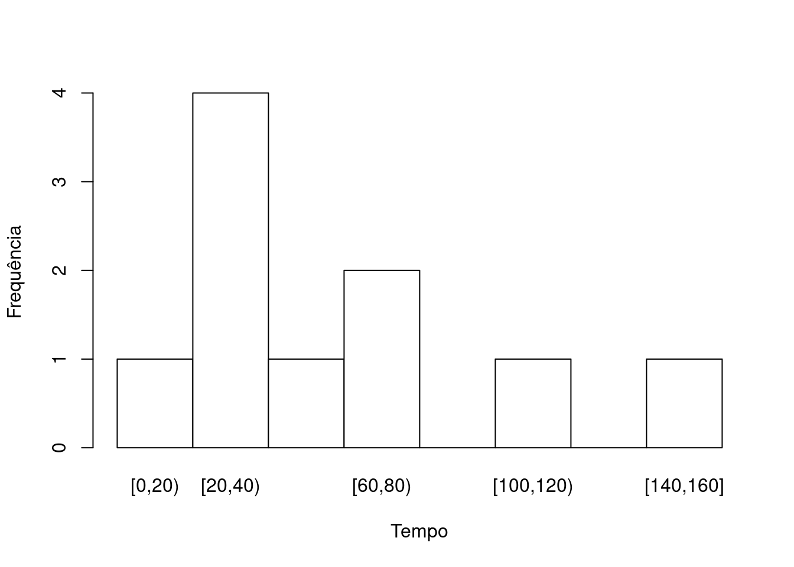
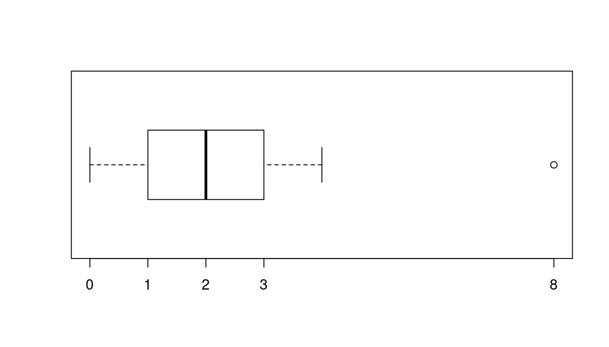
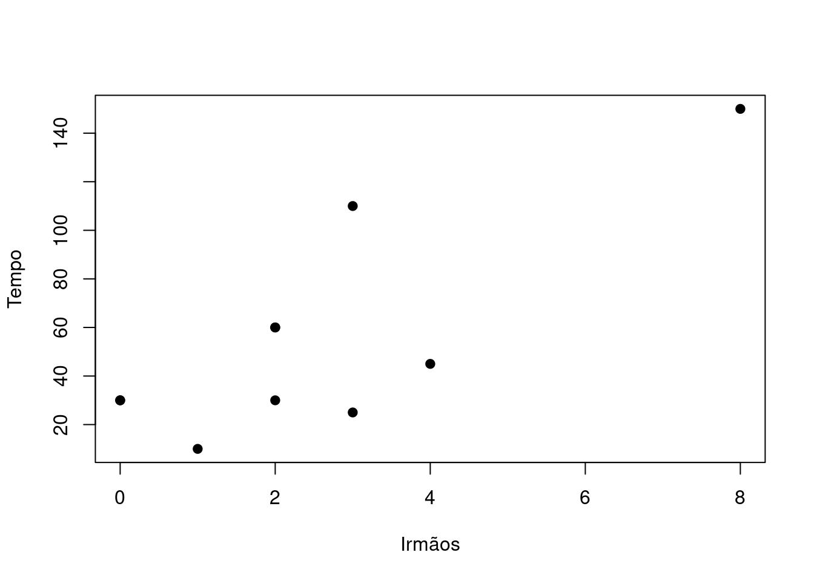
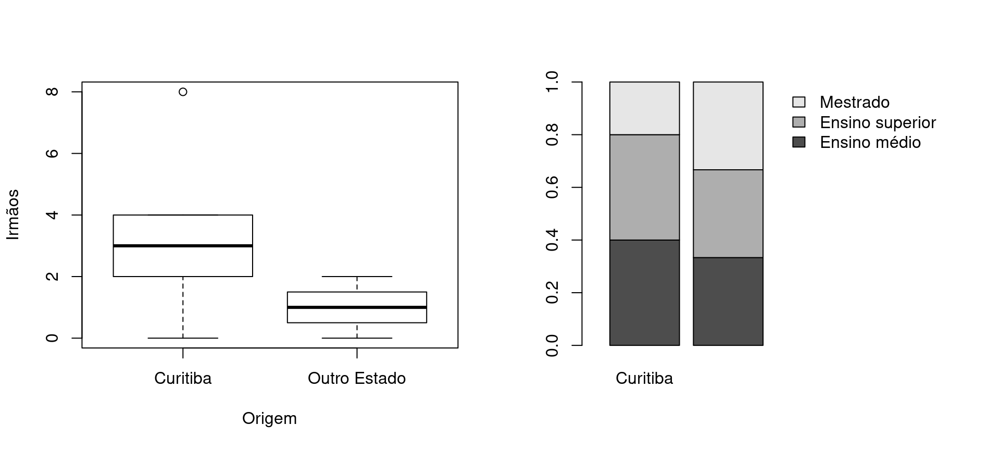

Considere o conjunto de dados que representa uma amostra de alunos de
primeiro ano de uma turma de graduação. As variáveis coletadas foram:
grau de escolaridade (ensino médio, ensino superior, mestrado,
doutorado), origem, número de irmãos e tempo que o indivíduo leva para
chegar à universidade em minutos. Os dados da amostra estão descritos na
tabela.
| Ensino superior |
Curitiba |
2 |
30 |
| Ensino médio |
Região metropolitana |
3 |
110 |
| Ensino médio |
Curitiba |
8 |
150 |
| Mestrado |
Curitiba |
3 |
25 |
| Ensino superior |
Curitiba |
4 |
45 |
| Ensino médio |
Curitiba |
0 |
30 |
| Ensino superior |
Outro Estado |
2 |
60 |
| Ensino superior |
Interior do Paraná |
2 |
60 |
| Ensino médio |
Outro Estado |
1 |
10 |
| Mestrado |
Outro Estado |
0 |
30 |
Com base nos dados, responda as questões.
Nas respostas use pelo menos 2 casas decimais.
Nos gráficos atente-se para a legenda e escalas.
- Quais são os tipos das variáveis coletadas? Classifique-as em
qualitativa nominal, qualitativa ordinal, quantitativa discreta ou
quantitativa contínua.
| Escolaridade |
Qualitativa ordinal |
| Origem |
Qualitativa nominal |
| Irmãos |
Quantitativa discreta |
| Tempo |
Quantitativa contínua |
- Considere que para gerar a amostra existia um cadastro de alunos.
Decidiu-se por selecionar 1 a cada 50 alunos deste cadastro. Para isso,
sorteou-se um número aleatório entre 1 e 50 para decidir a unidade de
partida, para as demais unidades incrementou-se o número da unidade de
partida de 50 em 50 até que o tamanho da amostra desejada fosse
atingido. Qual o nome deste método de amostragem? Este plano de
amostragem corresponde a um método probabilístico ou não
probabilístico?
| Amostragem.sistemática |
Método probabilístico |
- Monte uma tabela de frequências para a variável origem. Use
frequências absolutas e relativas. Qual é a classe modal?
| Curitiba |
5 |
0.5 |
| Interior do Paraná |
1 |
0.1 |
| Outro Estado |
3 |
0.3 |
| Região metropolitana |
1 |
0.1 |
| R |
Curitiba é a classe modal, ou seja, a maior parte dos
indivíduos vieream de Curitiba. |
- Monte uma tabela de frequências para a variável tempo até a
universidade. Use faixas de tamanho 20, partindo de 0 até 160. Qual é a
faixa modal?
| [0,20) |
1 |
0.1 |
| [20,40) |
4 |
0.4 |
| [40,60) |
1 |
0.1 |
| [60,80) |
2 |
0.2 |
| [80,100) |
0 |
0.0 |
| [100,120) |
1 |
0.1 |
| [120,140) |
0 |
0.0 |
| [140,160] |
1 |
0.1 |
| R |
[20, 40) é a faixa modal. |
- Obtenha média, mediana, desvio padrão para as variáveis número de
irmãos e tempo até a universidade.
| Irmaos |
2.5 |
5.39 |
2.32 |
| Tempo |
55.0 |
1888.89 |
43.46 |
- Considere o indivíduo da terceira linha da tabela. Qual o valor do
Z-escore para número de irmãos e tempo até a universidade deste
indivíduo? Interprete o resultado.
| R |
O indivíduo está mais de 2 desvios padrões distante da
média para ambas as variáveis. |
Número de irmãos e tempo até a universidade são variáveis em
diferentes escalas, qual delas apresenta maior variabilidade? Utiliza
uma medida de comparação adequada.
Com base na tabela do item (4), esboce o histograma da variável
pesos. O que você conclui a respeito da simetria?

- Obtenha as quantidades necessárias e esboce o box-plot da variável
número de irmãos. Coloque nos eixos os valores utilizados para o esboço.
O que você conclui a respeito da simetria e da presença de valores
atípicos?

| R |
A variável é razoavelmete simétrica mas apresenta um
valor atípico. |
- Esboce a representação gráfica adequada que permita avaliar a
relação entre as variáveis número de irmãos e tempo até a universidade.
O que você conclui?

- Avalie os gráficos abaixo. O que você conclui?

| R1 |
Aparentemente indivíduos de Curitiba tem mais irmãos
que indivíduos de outros estados. |
| R2 |
A proporção de indivíduos de outro estado com mestrado
é superior à proporção de indivíduos com mestrado de Curitiba. |
- Obtenha uma medida de associação entre número de irmãos e tempo. O
que você conlui?
| R |
O valor calculado é maior que 0, indicando relação
linear crescente entre as variáveis, assim como o diagrama de dispersão
da questão 9. |
- Obtenha uma tabela de dupla entrada e uma medida de associação entre
escolaridade e origem. O que você conlui?